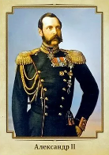

Владимир Святославич

Александр II Николаевич Освободитель (29 апреля 1818 - 13 марта 1881 года) ― император Российской империи с 2 марта 1855 года по 13 марта 1881 года, после отца Николая I и предшествовавший сыну Александру III. Александр был прозван «Освободителем» за освобождение крепостных в 1861 году, он провел несколько реформ. Однако он был убит революционным движением «Народная воля» в 1881 году.